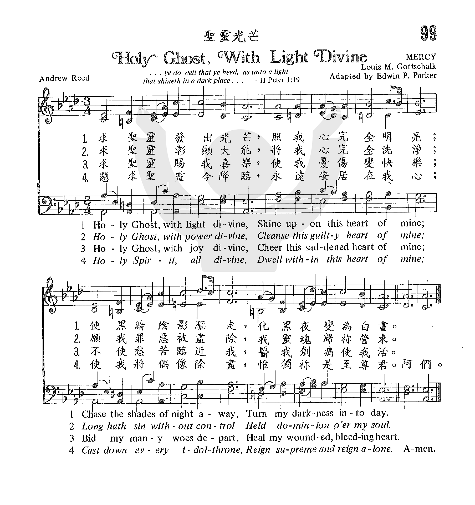
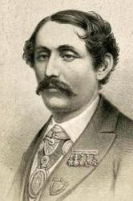

|
|
|
|
1 Holy Spirit, light divine, 2 Holy Spirit, love divine, 3 Holy Spirit, joy divine, 4 Holy Spirit, pow'r divine, 5 Holy Spirit, fill my heart, |
099 聖靈光芒 HOLY GHOST, WITH LIGHT DIVINE.mp3” by DOW YOUNG. Track
5. Genre: Other.
求聖靈彰顯大能，
求聖靈賜我喜樂，
懇求聖靈今降臨， |
|
https://www.zanmeishige.com/tab/25421.html?songbook=1&index=99

|
|
|
|
|

Holy Ghost, with Light Divine (Weekly Hymn Project) https://youtu.be/K9v57uv0Oro -
聖靈光芒 HOLY GHOST, WITH LIGHT DIVINE
| Text: | Holy Ghost, With Light Divine |
| Author: | Andrew Reed, 1787-1862 |
| Tune: | LAST HOPE |
| Arranger: | H. P. M. |
| Composer: | L. M. Gottschalk |
| Short Name: | Andrew Reed |
| Full Name: | Reed, Andrew, 1787-1862 |
| Birth Year: | 1787 |
| Death Year: | 1862 |
Reed, Andrew,

D.D., son of Andrew Reed, was born in London on Nov. 27, 1787, and educated for the Congregational Ministry at Hackney College, London. He was first the pastor of the New Road Chapel, St. George's-in-the-East, and then of the Wycliffe Chapel, which was built through his exertions in 1830. His degree was conferred by Yule College, America. He died Feb. 25, 1862. As the founder of "The London Orphan Asylum," "The Asylum for Fatherless Children," “The Asylum for Idiots” "The Infant Orphan Asylum," and "The Hospital for Incurables," Dr. Reed is more fully known, and will be longer remembered than by his literary publications. His Hymn Book was the growth of years. The preparation began in 1817, when he published a Supplement to Watts, in which were a few originals. This was enlarged in 1825; and entirely superseded by his collection The Hymn Book, prepared from Dr. Watts's Psalms & Hymns and Other Authors, with some Originals, in 1842 (Preface). His hymns, mostly of a plain and practical character, numbering 21, were contributed to these various editions, and were republished with those of his wife in the Wycliffe Supplement, 1872. The best known are "Ah Jesus, let me hear Thy voice” and ”Spirit Divine, attend our prayer." All Dr. and Mrs. Reed's hymns are anonymous in The Hymn Book, 1842, but are given with their names in the Wyclife Supplement, 1872. His hymns now in common use include, in addition to those annotated under their respective first lines :—
| Short Name: | Louis M. Gottschalk |
| Full Name: | Gottschalk, Louis Moreau, 1829-1869 |
| Birth Year: | 1829 |
| Death Year: | 1869 |
Louis Moreau Gottschalk USA 1829-1869.

Born in New Orleans, LA, to a Jewish father and Creole mother, he had six siblings and half-siblings. They lived in a small cottage in New Orleans. He later moved in with relatives (his grandmother and a nurse). He played the piano from an early age and was soon recognized as a prodigy by new Orleans bourgeois establishments. He made a performance debut at the new St. Charles Hotel in 1840. At 13 he left the U.S. And went to Europe with his father, as they realized he needed classical training to fulfill his musical ambitions. The Paris Conservatory rejected him without hearing him play on the grounds of his nationality. Chopin heard him play a concert there and remarked, “Give me your hand, my child, I predict that you will become the king of pianists. Franz Liszt and Charles Valentin Alkan also recognized his extreme talent. He became a composer and piano virtuoso, traveling far and wide performing, first back to the U.S., then Cuba, Puerto Rico, Central and South America. He was taken with music he heard in those places and composed his own. He returned to the States, resting in NJ, then went to New York City. There he mentored a young Venezuelan student, Carreno, and became concerned that she succeed. He was only able to give her a few lessons, yet she would remember him fondly and play his music the rest of her days. A year after meeting Gottschalk, she performed for President Lincoln and went on to become a renowned concern pianist, earning the nickname “Valkyrie of the Piano”. Gottschalk was also interested in art and made connections with notable figures of the New York art world. He traded one of his compositions to his art friend, Frederic Church, for one of Church's landscape paintings. By 1860 Gootschalk had established himself as the best known pianist in the New World. He supported the Union cause during the Civil War and returned to New Orleans only occasionally for concerts. He traveled some 95,000 miles and gave 1000 concerts by 1965. He was forced to leave the U.S. later that year as a result of a scandelous affair with a student at Oakland Female Seminary in Oakland, CA. He never came back to the U.S. He went to South America giving frequent concerts. At one, in Rio de Janeiro, Brazil, he collapsed from yellow fever as he played a concert. He died three weeks later, never recovering from the collapse, possibly from an overdose of quinine or an abdominal infection. He was buried in Brooklyn, NY. Though some of his works were destroyed or disappeared after his death, a number of them remain and have been recorded by various artists.
Words: Andrew Reed (b. Nov. 27, 1787; d. Feb. 25, 1862)
Music: Mercy, by Louis Moreau Gottschalk (b. May 8, 1829;
d. Dec. 18, 1869)
Arranged by Edwin Pond Parker (b. Jan. 13, 1836; d. May 28,
1925)
Links:
Wordwise Hymns
The Cyber
Hymnal
Note: The tune, Mercy, was arranged by Edwin Parker from Gottschalk’s piece for piano called “The Last Hope.”
The use of the term “Holy Ghost” for the third Person of the Trinity has fallen into disuse in many circles today. Most Christians speak of the Spirit of God, or the Holy Spirit. In fact, the two words, ghost and spirit, have exchanged meanings, since the King James Version was produced in 1611.
In referring to the virgin birth of Christ, the angel Gabriel said to Mary, “The Holy Ghost shall come upon thee” (Lk. 1:35, KJV). Later, when the resurrected Christ came to His disciples, we read, “They were terrified and affrighted, and supposed that they had seen a spirit” (Lk. 24:37, KJV). Newer translations, such as the New International Version, and the New Living Translation, read “Holy Spirit” in Luke 1:35, and “ghost” in Luke 24:37.
With this change in terminology in view, the title and first stanza of Reed’s hymn are sometimes revised to read “Holy Spirit, Light Divine,” and CH-3 and 4 begin, respectively, “Holy Spirit, Power divine,” and “Holy Spirit, Joy divine.”
Andrew Reed’s hymn is a prayer requesting the ministry of the Holy Spirit in his life. The Bible does not tell us to direct our prayers to Him. We are to pray to our heavenly Father, on the authority of our relationship with Christ, enabled by the Spirit of God. “For through Him [Christ] we both have access by one Spirit to the Father” (Eph. 2:18; cf. Matt. 6:9; Jn. 14:13; 16:24). Since the Holy Spirit is Himself God, it is not heresy to pray to Him; it is simply not the pattern the Scriptures have given to us.
Leaving that aside, let’s consider this hymn. In the four stanzas commonly used today, there is a noticeable progression.
In CH-1, the author asks for the illumination of the Spirit. It is the work of the Spirit of God to reveal the Person of Christ to us, in order to bring glory to Him (Jn. 16:14). Also part of His ministry is the opening of our understanding to grasp the spiritual truths of God’s Word (I Cor. 2:9-10, 12). This is further explained in Reed’s seldom used second stanza.
Let me see my Saviour’s face,
Let me all His beauties trace;
Show those glorious truths to me
Which are only known to Thee.
As we come to a deeper understanding of these things, we become more and more aware of how far short we come of God’s holy standard (Rom. 3:23). With that in mind, Andrew Reed prays for the Spirit to cleanse him (CH-3), and bring a renewal of the joy of his salvation (CH-4) (cf. Ps. 51:7, 12).
We might challenge the plea in CH-5 for the Holy Spirit to “dwell within this heart of mine.” There is ample Scripture to show that the Spirit of God indwells each Christian heart (Rom. 5:5; I Cor. 6:19-20; II Cor. 1:21-22; 5:5) . “If anyone does not have the Spirit of Christ, he is not His [he is not a Christian at all]” (Rom. 8:9).
But without reading too much into Reed’s words, there is perhaps a parallel to Paul’s prayer (to Christians) “that Christ may dwell in your hearts through faith” (Eph. 3:17). Christians without Christ? Impossible. But the word dwell can have the sense of settle down and be at home in. The NLT correctly paraphrases the text, “I pray that Christ will be more and more at home in your hearts.”
That would certainly fit Reed’s lines. And the rest of the fifth stanza, as well as the seldom used sixth stanza, show that his intended desire is that the Lord reign supreme within him.
Holy Spirit, all divine,
Dwell within this heart of mine;
Cast down every idol throne,
Reign supreme, and reign alone.
See, to Thee I yield my heart,
Shed Thy life through every part;
A pure temple I would be,
Wholly dedicate to Thee.
Questions:
1) In First Corinthians 3:16 asks, “Do you not know that you are the
temple of God?” The Greek word translated “you” is plural. The text
means that all who make up the body of Christ are, corporately,
a spiritual temple of the Spirit of God (cf. Eph. 2:22). What does this
imply about the priorities and work of the local church (see I Cor.
3:16-17)?
2) The Bible also speaks of each individual Christian as a “temple” of the Holy Spirit (I Cor. 6:19-20) What does this suggest about Him? And about how we should act?
Links:
Wordwise Hymns
The Cyber
Hymnal
"HOLY SPIRIT, TRUTH DIVINE"
"…And so also is the Holy Ghost, whom God hath given to them that obey Him" (Acts
5:32)
INTRO.:
A hymn which points out that the Holy Spirit has a definite work to accomplish in the lives of those who obey God is "Holy Spirit, Truth Divine." The text was written by Samuel Longfellow (1819-1892). It was first published under the heading "Prayer for Inspiration" in the 1864 Hymns of the Spirit which Longfellow, a brother to poet William Wadsworth Longfellow, edited with fellow Unitarian minister Samuel Johnson. Samuel Longfellow is best known among us as the author of "Love for All," and one stanza of his hymn "One Holy Church" was used to make a gospel song by Tillit S. Teddlie. "Holy Spirit, Truth Divine" has been set to several tunes, including one (Mercy) adapted from music by Louis Moreau Gottschalk and usually used with the hymn "Cast Thy Burden on the Lord;" and another (Vienna) by Justin Heinrich Knecht. All of our books that include Longfellow’s song have a tune (Orientus Partibus), a French melody, c. 1200, attributed to Pierre de Corbeil and in other books of ours used with Handley Moule’s "Lord and Savior."
Many modern books use a tune (Canterbury or Song Thirteen) composed by Orlando Gibbons, who was born at Oxford, England, around Dec. 25, 1583. His father William was a musican at Oxford, and his brother William played the organ at Exeter. After being a choirboy at King’s College, Cambridge, from age twelve, he enrolled at King’s College in 1599, then became an organist at the king’s chapel in 1604, virginalist or harpsichordist at the royal court in 1619, and organist at Westminster Abbey in 1623. One of the leading English composers and keyboard performers of the late Renaissance, Gibbons was known especially for his madrigals, harpsichord pieces, chamber works, and Anglican church music. His volume of madrigals was published in 1612, and several of his harpsichord pieces were included that same year in Parthenia, the first printed book of harsichord music. This particular tune appeared with a paraphrase of Song of Solomon chapter 4 in the 1623 Hymns and Songs of the Church compiled by George Wither, which contained the complete output of sixteen hymn tunes by Gibbons.
Wither’s work is noteworthy because it is one of only a few collections for congregational singing published between 1551 and 1700 that was a book of songs rather than a Psalter. Two years later, Gibbons died of apoplexy on June 5, 1625, at Canterbury, England, after having conducted the funeral music for King James I earlier that same year. The modern arrangement of this tune was made in 1906 for The English Hymnal by editor Ralph Vaughan Williams (1872-1958). Among hymnbooks published by members of the Lord’s church during the twentieth century for use in churches of Christ, "Holy Spirit, Truth Divine" appeared in the 1963 Christian Hymnal edited by J. Nelson Slater. Today it may be found in the 1992 Praise for the Lord edited by John P. Wiegand; and the 1994 Songs of Faith and Praise edited by Alton H. Howard. All of these used the Corbeil tune.
The song reminds us of the important part that the Holy Spirit plays in the lives of God’s people.
I. In stanza 1 He is called Truth
"Holy Spirit, Truth divine, Dawn upon this soul of mine;
Word of God and inward Light, Wake my spirit, clear my sight."
A. The Holy Spirit is called the Spirit of truth and was sent to guide the
apostles into all truth: Jn. 16:13
B. This truth is revealed to us in the written word which is the sword or
instrument that the Spirit uses to do His work: Jn. 17:17, Eph. 6:18
C. It is by our knowledge of this word revealed by the Spirit that our eyes can
be enlightened, our spirit awakened, and our sight cleared: Eph. 1:17-19
II. In stanza 2 He is called Love
"Holy Spirit, Love divine, Glow within this heart of mine.
Kindle every high desire; Perish self in Thy pure fire."
A. Through the word that He inspired, the Spirit reveals the love of God to us:
1 Jn. 4:7-11
B. This love will kindle every high desire because if we love Christ we will
keep His commandments: Jn. 15:13
C. In this way, our faith will be tested and purified as by fire: 1 Pet. 1:7
III. In stanza 3 He is called Power
"Holy Spirit, Power divine, Fill and nerve this will of mine;
By Thee may I strongly live, Bravely bear, and nobly strive."
A. The gospel, which the Spirit revealed from God through Christ to mankind, is
the power of God: Rom. 1:16
B. It is by faith in the gospel that we can live in a way pleasing to God: 2
Cor. 5:7 (modern hymnbook editors who feel it incumbent upon them to "update"
the language of classic hymns change the third line to "Grant that I may
strongly live")
C. The power of the gospel will enable us to strive nobly by taking up the
cross and bearing our own load: Matt. 16:24, Gal. 6:5
IV. In stanza 4 He is called Right
"Holy Spirit, Right divine, King within my conscience reign;
Be my Law, and I shall be Firmly found, forever free."
A. "Right" here means the knowledge of what is right, which the Holy Spirit
provides by the law that He reveals and that is intended to work on our
consciences: Rom. 2:14-15
B. Therefore, realizing that we cannot be justified merely by law, we must
understand that just as an inventor cannot get anywhere by going against natural
law, so we cannot please God without abiding in the law that He has made known
by His Spirit to us: ROm. 8:2
C. Obedience to this law is the only way to be truly free:Rom. 6:18-19
V. In stanza 5 He is called Peace
"Holy Spirit, Peace divine, Still this restless heart of mine;
Speak to calm this tossing sea, Stayed in Thy tranquility."
A. The Holy Spirit brings peace to our lives, because peace is the result of a
right relationship with God which is based upon obedience to the word which the
Spirit revealed: Phil. 4:6-7
B. Thus, when our hearts are restless and we feel a tossing sea in our souls,
we can look to that word for the peace of God to rule in our hearts: Col. 3:15
C. In this way, God, through the word of the Spirit, will enable us to have
peace and tranquility: Jn. 14:27, 16:33 (again, the "updaters" change the last
line to "Grant me Your tranquility")
VI. In stanza 6 He is called Joy
"Holy Spirit, Joy divine, Gladden Thou this heart of mine;
In the desert ways I sing, ‘Spring, O Well, forever spring.’"
A. It is the revealed word of the Spirit that allows us to have joy, as well as
righteousness and peace: Rom. 14:17
B. Therefore, we look to the Holy Spirit to provide spiritual water for us,
like Israel travelling in the desert and being given water by God: Num. 21:16-17
C. And Jesus identified the Spirit as the source of living water in our lives:
Jn. 7:37-39 ("updating" strikes again, with the second line
changed to "Gladden NOW this heart of mine," and the fourth line, inexplicably,
to "Spring, O Living Water, spring")
CONCL.:
While Longfellow was a Unitarian, one writer noted, "A good Trinitarian would not discover anything wrong with this Unitarian hymn" (I use the word "Trinitarian" simply to mean those of us who believe that there are three separate persons who make up the Godhead). Most books say that the song was originally published in six stanzas, but Net Hymnal lists a seventh.
"Now incline me to repent; Let me now my sins lament.
Now my foul revolt deplore; Weep, believe, and sin no more."
Many brethren may have a tendency to shy away from songs about the Holy Spirit because of all the wild claims made about the Spirit in the religious world. However, the Bible has a lot to say about the Holy Spirit and His work, so should we refrain from singing truth on this subject just because it might be misunderstood by others? Also, some brethren believe that it is wrong to sing songs addressed to the Holy Spirit, considering this the same as praying to the Spirit. Each will have to reach his own conclusion on this matter, but others would argue that praying and singing are separate acts of worship so that there is no scriptural principle violated by calling upon the Holy Spirit in song to do that which the scriptures teach that He has promised to do. In any event, we certainly need to search the scriptures diligently so that we can understand and appreciate the "Holy Spirit, Truth Divine."